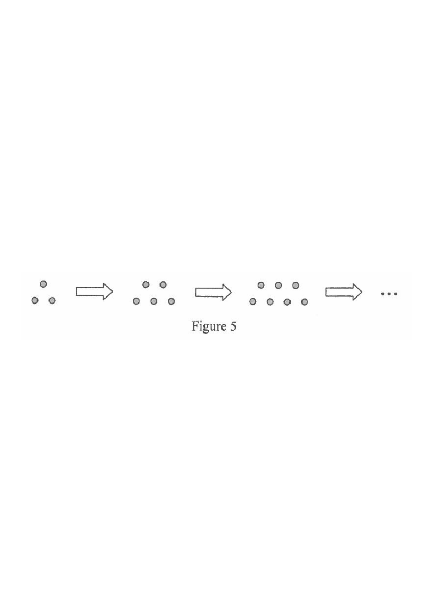

Scroll the solution on the right — the diagram follows each step.
In Figure 5, the 1st pattern consists of 3 dots. For any positive integer $n$, the $(n+1)$th pattern is formed by adding 2 dots to the $n$th pattern. Find the least value of $m$ such that the total number of dots in the first $m$ patterns exceeds $6\,888$.

Each new pattern adds 2 dots, so the number of dots follows an arithmetic sequence with first term $a=3$ and common difference $d=2$:
$$a_n = 3 + (n-1)\times 2 = 2n+1$$
Check: $a_1=3,\ a_2=5,\ a_3=7,\ a_4=9,\dots$
Hint: “adding 2 each time” is the signal that the sequence is arithmetic.
The total number of dots in the first $m$ patterns is the sum of an arithmetic series:
$$S_m = 3+5+7+\cdots+(2m+1)$$
There are $m$ terms, first term $3$, last term $2m+1$.
Hint: list both ends of the series before substituting into the sum formula.
$$S_m=\frac{m}{2}\big(3+(2m+1)\big)=\frac{m}{2}(2m+4)=m(m+2)=m^2+2m$$
Hint: $S_n=\dfrac{n}{2}\,(\text{first}+\text{last})$.
We need the least integer $m$ with total $>6\,888$:
$$m^2+2m > 6\,888$$
$$m^2+2m-6\,888 > 0$$
Hint: “exceeds” means strictly greater than.
Note $82-84=-2$ and $82\times 84 = 6\,888$, so
$$(m-82)(m+84) > 0$$
$$\Rightarrow\ m < -84 \quad\text{or}\quad m > 82$$
Hint: after factorising, sketch on a number line — the parabola opens upwards, so it is positive outside the roots.
Since $m$ is a positive integer, we take $m>82$, hence $m\ge 83$.
Verification: $S_{82}=82^2+2(82)=6\,724+164=6\,888$ (not exceeding) and $S_{83}=83^2+2(83)=6\,889+166=7\,055>6\,888$. ✓
Hint: always test the boundary values using the exact formula.
Question. The first pattern of a sequence has \(5\) dots and each new pattern adds \(2\) dots. (a) Find the number of dots in the \(n\)th pattern. (b) Find the least value of \(m\) such that the total number of dots in the first \(m\) patterns exceeds \(9600\). [4 marks]